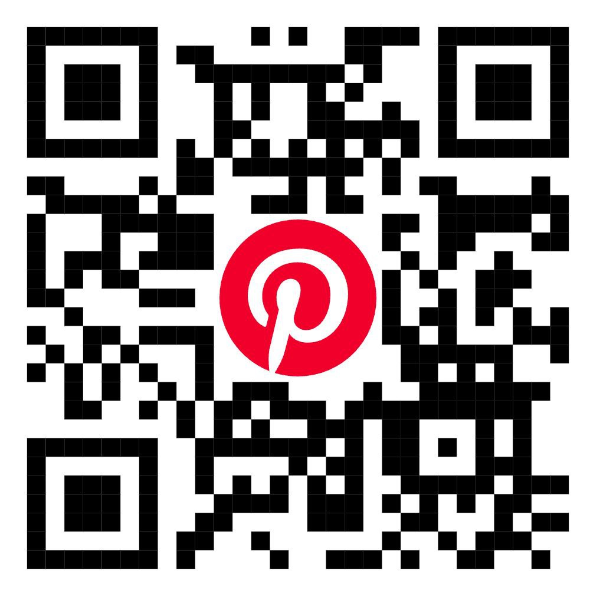

Overview
Pinterest is a visual discovery platform and social media app that allows users to find and save ideas for various interests, projects, and inspiration. Pinterest was established in December 2009 by Ben Silbermann, Evan Sharp, and Paul Sciarra. However, the platform officially launched to the public in March 2010. Users can "pin" images, videos, and links to their virtual "boards" to organize and categorize content based on themes or topics. It's a mix of social networking, content curation, and inspiration discovery.
Explore Topics
Discover exciting features, tips, and how Pinterest can enrich your life.
Search
Discover ideas with keywords, hashtags, or visual search.
Pins
Save ideas using images, videos, or links.

Follow
Keep up with favorite creators, brands, or boards.

Reactions & Comments
Engage with Pins and other users.

Group Boards
Collaborate on boards with friends or teams.
Monetization
Affiliate links and shopping tags for products.
Why Pinterest?
- Simple to use with a clean, organized interface.
- Discover trends and ideas from around the world.
- A creative, less competitive space compared to other social platforms.
- Most features are free, making it accessible to everyone.
- Access tutorials, guides, and step-by-step instructions for skills like cooking, crafting, or fitness.
Features
- Pins: Save images, videos, or links from the web or Pinterest to personal boards.
- Boards: Organize pins into themed collections
- Sharing Options: Share pins via social media, email, or direct messaging on Pinterest.
- Analytics: Track pin performance, audience engagement, and traffic data.
- Collaboration: Invite others to collaborate on group boards.
- Pinterest Ads: Promote pins for better reach and engagement, targeting specific audiences.
- Offline Mode: Save pins to view later, even without an internet connection.
Global Impact
Through creativity, education, and connection, Pinterest continues to inspire millions across the globe and contribute to positive changes in how people live, learn, and innovate.
Join Pinterest Today!
Sign up to connect with friends, family, and people who share your interests. It's free and easy!
How to Create a Pinterest Account:
- 1. Click the Sign In button or scan the QR code above.
- 2. Choose to sign up with Google, Facebook, or email.
- 3. Enter your details (name, email, password).
- 4. Add a profile picture and bio.
- 5. Start exploring and pinning!
Your Pinterest account is now ready!